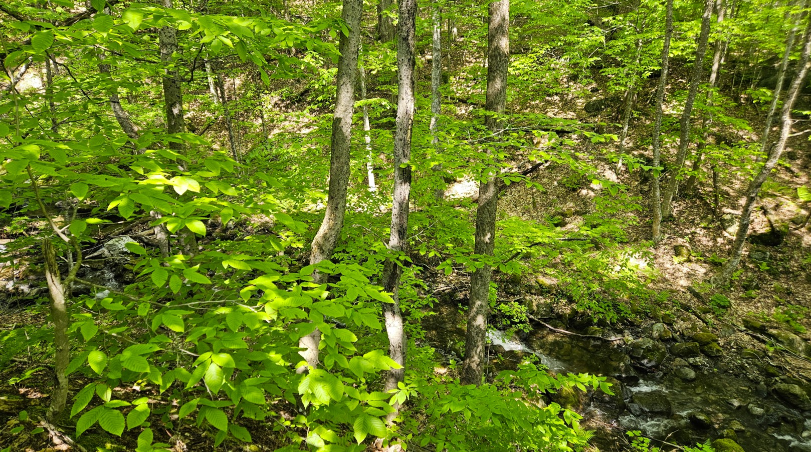
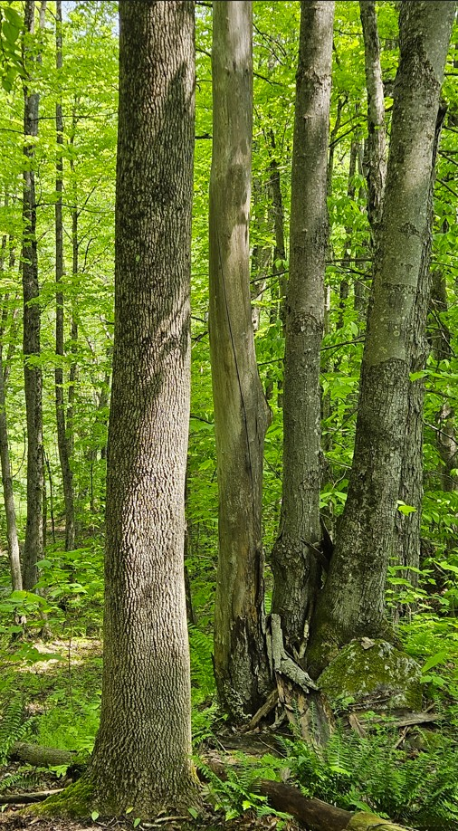
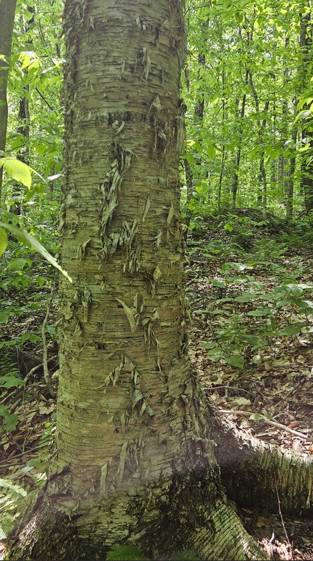
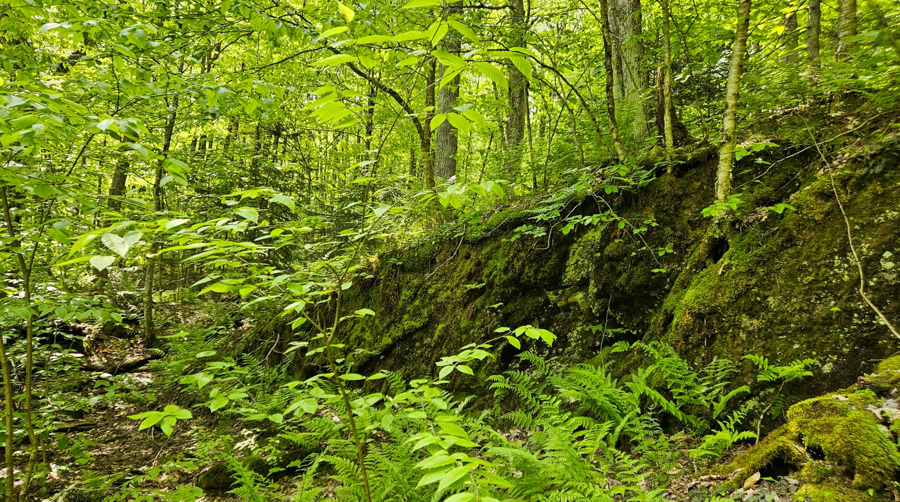
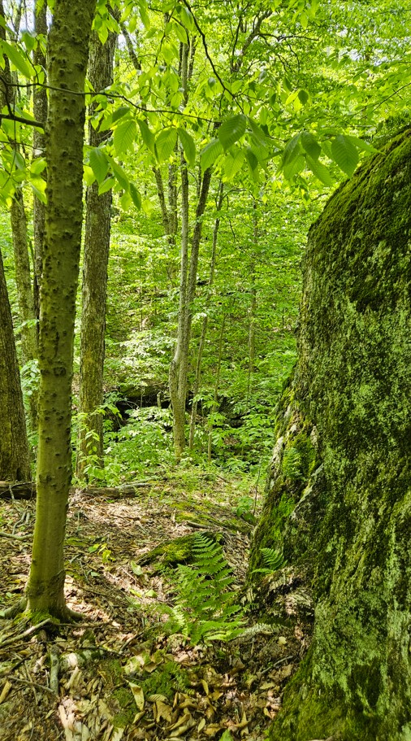
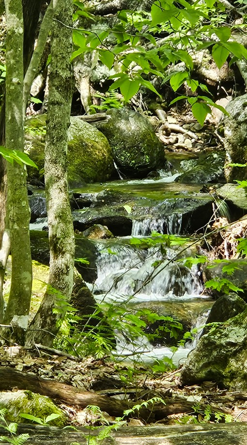
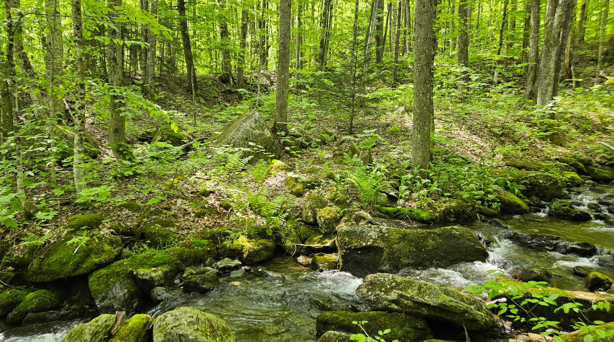

Environnement naturel
Flore et aspects visuels
Le relief varié du terrain présente une diversité importante de peuplements forestiers : érable à sucre, tilleul, hêtre, bouleau jaune (merisier) et ostryer de Virginie (bois de fer). En explorant le site, on rencontre différentes formes topographiques, notamment des affleurements rocheux, des blocs erratiques, ainsi qu'une gorge façonnée par le ruisseau, au pied d’une chute d’environ 6 à 7 mètres.









Environnement géologique
L’environnement géologique est composé de schistes (schiste de Sutton), recouvert d’un dépôt de sable et de gravier. La morphologie du terrain est bosselée, renforçant son attrait naturel.